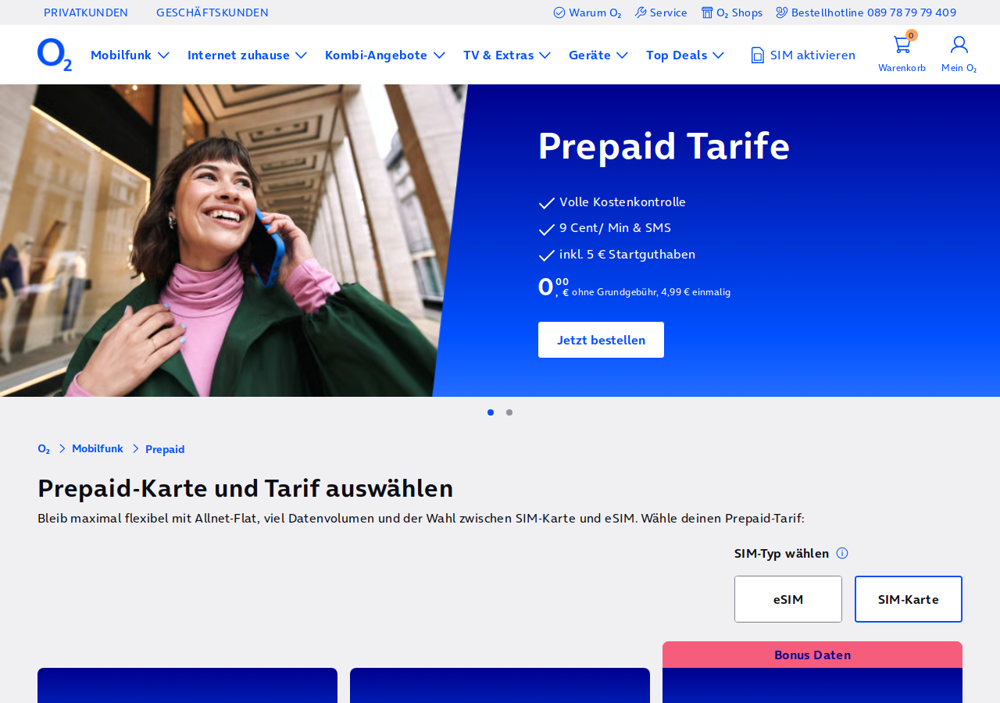
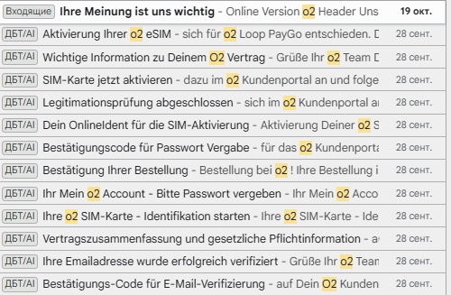
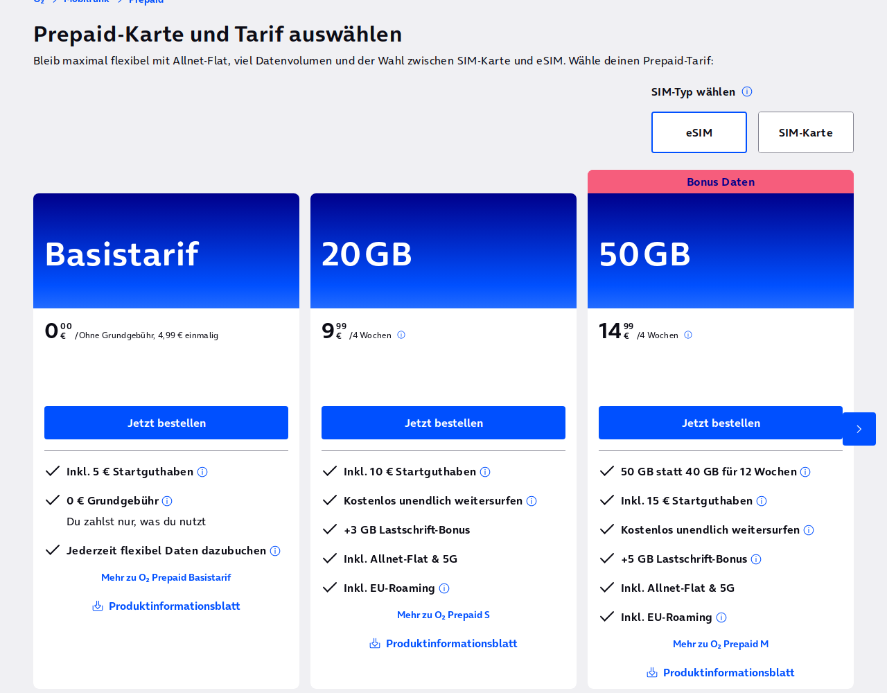

Отдельная страница
Немецкий номер O2
Зарубежный номер нужен для регистрации в сервисах, которые не принимают российский: Anthropic, OpenAI и другие. Я оформил себе немецкий номер O2 28 сентября 2026, за один вечер, не выезжая из России. Ниже мой путь по шагам и письма, которые O2 присылал на каждом этапе: по ним легко понять, где вы сейчас и что делать дальше.

Что приготовить заранее
- Загранпаспорт нового образца. Тот, что на 10 лет: внутри у него чип, его потом прикладывают к телефону.
- Айфон (или другой телефон, который умеет прикладываться к карте для оплаты).
- Защищённое подключение с адресом в Германии или Европе. С российского адреса сайт O2 может не открыться или отказать на середине. Как включить подключение, рассказано в подуроке 0.2.
- Личная почта, к которой у вас будет доступ ещё много лет. Туда придёт десяток писем от O2.
- Переводчик в браузере. Сайт O2 на немецком. Нажмите правой кнопкой по странице и выберите «Перевести на русский».
Все письма разом
Так выглядят письма O2 в моём ящике. Сверху самые свежие, поэтому читать снизу вверх: первое письмо внизу, последнее (опрос через три недели) наверху.

Дальше по шагам: что я делал и какое письмо приходило после.
Шаг 1. Тариф
- Открыл страницу предоплаченных тарифов O2. Предоплаченный значит: никакого договора на годы, кладёте деньги на счёт и тратите.
- Справа вверху переключил тип на eSIM, то есть электронную сим-карту: её не нужно везти почтой, она ставится в телефон по коду.
- Взял самый левый тариф, Basistarif: без абонентской платы, 4,99 € один раз, внутри 5 € на счёте. Для приёма СМС этого хватает, большой интернет не нужен.
- Нажал «Jetzt bestellen», это «Заказать».

Шаг 2. Заказ и личный кабинет
- Имя и фамилию пишите латиницей, ровно как в загранпаспорте, буква в букву. Не совпадёт хоть одна буква: проверка личности на шаге 3 не пройдёт.
- Почту пишите без опечаток: все письма ниже придут туда.
- Дату рождения берите из паспорта.
- По ходу заказа O2 попросит подтвердить почту и задать пароль личного кабинета «Mein O2». Коды приходят письмами, вводите их на сайте сразу: код на пароль живёт 15 минут.
- Bestätigungs-Code für E-Mail-Verifizierung: код подтверждения почты. Ввести на сайте.
- Ihre Emailadresse wurde erfolgreich verifiziert: почта подтверждена. Ничего делать не нужно.
- Vertragszusammenfassung und gesetzliche Pflichtinformation: краткое изложение условий тарифа, во вложении PDF. У меня в нём стоит «O2 Prepaid Basistarif». Сохраните и идите дальше.
- Ihr Mein O2 Account: Bitte Passwort vergeben: просьба задать пароль личного кабинета.
- Bestätigung Ihrer Bestellung: заказ принят.
- Bestätigungscode für Passwort Vergabe: код для пароля кабинета. Ввести за 15 минут.
- Ihre O2 SIM-Karte: Identifikation starten: пора подтвердить личность. Это шаг 3.
Шаг 3. Проверка личности
По немецкому закону номер выдают только человеку, которого проверили по документу. Я делал проверку через приложение (OnlineIdent): паспорт и телефон, без звонков.
- Открыл письмо «Dein OnlineIdent für die SIM-Aktivierung», в нём ссылка на проверку.
- Поставил на айфон приложение для проверки, ссылка на него есть на той же странице.
- В приложении выбрал документ «Reisepass», то есть загранпаспорт.
- Сфотографировал разворот паспорта с фотографией. Телефон ровно, без бликов.
- Приложение попросило приложить телефон к паспорту. Открыл паспорт на странице с фотографией, положил айфон верхней частью на эту страницу и не двигал, пока не появилась галочка.
- Сделал селфи, как просило приложение: посмотреть в камеру, повернуть голову.
- Дождался сообщения, что проверка пройдена, и вскоре пришло письмо об этом.
Снимите с айфона чехол, особенно с магнитом или карточкой внутри. Уберите паспорт из обложки. Держите телефон неподвижно 5-10 секунд, если не выходит, медленно поводите им по странице: чип где-то под ней. Совсем не получается, напишите мне в чат клуба.
- Dein OnlineIdent für die SIM-Aktivierung: ссылка на проверку личности через приложение.
- Legitimationsprüfung abgeschlossen: проверка пройдена. Дальше активация в личном кабинете.
Шаг 4. Включить номер и поставить в айфон
- Открыл письмо «SIM-Karte jetzt aktivieren», зашёл по нему в кабинет «Mein O2» и прошёл активацию по подсказкам на экране.
- Код для установки eSIM открыл на компьютере, чтобы навести на него камеру айфона.
- На айфоне: Настройки → Сотовая связь → Добавить eSIM → Использовать QR-код. Навёл камеру на код.
- Подписал новую линию понятно: «Германия».
- Через пару минут вверху появился второй значок связи, пришло письмо, что eSIM активна. Номер готов.
- SIM-Karte jetzt aktivieren: включите сим-карту в личном кабинете.
- Wichtige Information zu Deinem O2 Vertrag: служебное письмо по договору, ничего делать не нужно.
- Aktivierung Ihrer o2 eSIM: eSIM включена. В письме тариф назван «o2 Loop PayGo»: это оплата по факту, тот же базовый тариф, пугаться не нужно.
- Через три недели пришло Ihre Meinung ist uns wichtig: опрос, можно не отвечать.
Как понять, что получилось
- В настройках айфона видна вторая линия, «Германия».
- Вы знаете свой немецкий номер: он есть в кабинете «Mein O2» и в настройках линии.
- Попросите кого-нибудь прислать на этот номер СМС, или запросите код в любом сервисе. СМС пришла: всё работает.
Предоплаченный номер живёт, пока на нём есть движение и деньги. Раз в несколько месяцев заглядывайте в пополнение баланса O2 и следите за письмами от O2. Номер, привязанный к важным аккаунтам, терять нельзя: восстановить доступ к ним будет нечем.